Eurosystem staff macroeconomic projections for the euro area, December 2022
Overview
The outlook for the euro area has deteriorated somewhat, with weaker growth and higher and more persistent inflation than envisaged in the September 2022 ECB staff macroeconomic projections.[1] Economic growth was stronger than previously expected over the summer owing to the boost to services activity from the reopening of the economy and from government support measures. However, the ongoing energy crisis, high inflation, elevated uncertainty, the global slowdown and tighter financing conditions are all dragging down economic activity and have already led to a sharp slowdown in real GDP growth in the third quarter of 2022. Staff now expects a short-lived and shallow recession in the euro area at the turn of the year. As the economic consequences of the war in Ukraine unfold and fuel the strong inflationary pressures, consumer and business confidence have remained subdued, while real disposable incomes are being eroded and soaring cost pressures are curtailing production, especially in energy-intensive industries. The negative economic repercussions are expected to be partially mitigated by fiscal policy measures. In addition, high levels of natural gas inventories and ongoing efforts to reduce demand and replace Russian gas with alternative sources imply that the euro area is expected to avoid the need for mandated energy-related production cuts over the projection horizon, although risks of energy supply disruptions remain elevated, in particular for the winter of 2023-24. Over the medium term, as the energy market rebalances, it is expected that uncertainty will decline, and real incomes will improve. As a result, economic growth is expected to rebound, also supported by strengthening foreign demand and the resolution of remaining supply bottlenecks, despite less favourable financing conditions. The labour market is expected to remain relatively resilient to the coming mild recession, reflecting labour hoarding amid still significant labour shortages. Overall, annual average real GDP growth is expected to slow down markedly, from 3.4% in 2022 to 0.5% in 2023, and then to rebound to 1.9% in 2024 and 1.8% in 2025. Compared with the September 2022 projections, the outlook for GDP growth has been revised up by 0.3 percentage points for 2022, owing to positive surprises over the summer, and revised down by 0.4 percentage points for 2023, while it is unchanged for 2024.
Inflation has continued to surprise on the upside compared with the September 2022 projections and has broadened across HICP components, despite sharp declines in wholesale gas and electricity prices, weakening demand, easing supply bottlenecks and government measures to contain energy inflation. Headline HICP inflation is now expected to stay extremely elevated in the short term as pipeline price pressures related to past increases in commodity prices, the past depreciation of the euro, supply shortages and tight labour markets continue to feed through to consumer prices. Nevertheless, inflation is expected to decline from an average of 8.4% in 2022 to 6.3% in 2023, with inflation declining from 10% in the last quarter of 2022 to 3.6% in the last quarter of 2023. Inflation is then expected to decline to an average of 3.4% in 2024 and of 2.3% in 2025. The decline in inflation over the projection horizon reflects strong energy-related downward base effects throughout the course of 2023, the gradual impact of the normalisation of the ECB’s monetary policy which started in December 2021, the weaker growth outlook and the assumed decline in energy and food commodity prices, in line with futures prices, as well as the assumption that longer-term inflation expectations will remain anchored. Headline inflation is expected to fall to the ECB’s medium-term inflation target of 2% in the second half of 2025, while HICP inflation excluding energy and food will remain above 2% throughout the horizon. This persistence is driven by lagged indirect effects from high energy prices and from the past sharp depreciation of the euro (despite the recent slight appreciation), as well as by robust labour markets and inflation compensation effects on wages, which are expected to grow at rates well above historical averages in nominal terms (although in real terms remaining below the levels seen before the war in Ukraine over the full projection horizon). Compared with the September 2022 projections, headline inflation has been revised up substantially for 2022 (by 0.3 percentage points), 2023 (by 0.8 percentage points) and 2024 (by 1.1 percentage points), reflecting recent data surprises, a reassessment of the strength and persistence of pipeline price pressures and their pass-through, stronger wage growth and higher food commodity prices. These upward effects more than offset the downward impact of lower oil, gas and electricity price assumptions, a faster easing of supply bottlenecks, the recent appreciation of the euro and the weaker growth outlook. Importantly, new fiscal measures decided since the September 2022 projections, most of which aim at reducing energy price increases in 2023, dampen the upward revision to inflation in 2023, but contribute significantly to the upward revision in 2024 as many of the measures expire.
Table
Growth and inflation projections for the euro area
(annual percentage changes)
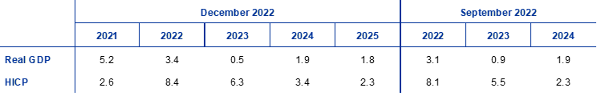
Notes: Real GDP figures refer to seasonally and working day-adjusted data. Historical data may differ from the latest Eurostat publications due to data releases after the cut-off date for the projections.
The uncertainty surrounding the staff projections remains at high levels. A key risk to the euro area outlook still relates to the possibility of more severe disruptions to European energy supplies, leading to further spikes in energy prices and to production cuts. A downside scenario reflecting this risk points to higher inflation than in the baseline projection in 2023 and 2024 (at 7.4% and 3.6% respectively) as energy prices spike, before inflation drops below the baseline to 2.0% in 2025 as the supply shocks unwind and the lagged impact of adverse demand shocks predominates. Real GDP in the downside scenario would contract by 0.6% in 2023 before recovering by 0.2% in 2024 and by 2.0% in 2025. This scenario is described in more detail in Box 3.
1 Real economy
Economic growth slowed down considerably in the third quarter of 2022, as strong effects from the post-pandemic reopening and easing supply chain disruptions were tempered by lower confidence and stronger imports, coupled with weak exports and high inflation (Chart 1). Domestic demand contributed strongly to growth, on the back of robust private consumption growth – which was supported by lingering reopening effects during the summer months – and a large increase in investment growth. The latter reflected an easing of supply chain disruptions and a strong increase in intellectual property investment in Ireland. The positive contribution from domestic demand was largely offset by net trade, which made a strong negative contribution to real GDP growth in the third quarter. An increase in the Purchasing Managers’ Index (PMI) indicator of stocks of finished goods and a drop in new orders corroborated a positive contribution from inventory-building in that quarter. Overall, growth was slightly higher in both the second quarter and the third quarter than had been expected in the September 2022 projections.
Chart 1
Euro area real GDP growth
(quarter-on-quarter percentage changes, seasonally and working day-adjusted quarterly data)
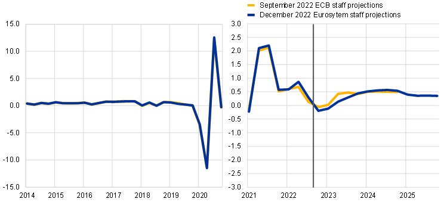
Notes: Historical data may differ from the latest Eurostat publications due to data releases after the cut-off date for the projections (see footnote 1). The vertical line indicates the start of the current projection horizon.
As the energy shock stemming from the war in Ukraine propagates through the economy, with high inflation and uncertainty, and cutbacks in energy-intensive industries, real GDP growth is projected to contract slightly in both the fourth quarter of 2022 and the first quarter of 2023. With the fading of the effects of the post-pandemic reopening, higher inflation, rising bank lending rates and low business and consumer confidence and expectations are envisaged to curb both consumer and capital spending over the winter. This is reflected in the latest survey indicators, such as the PMI, which point to a broad-based contraction in economic activity in the fourth quarter of 2022, despite a further easing of supply bottlenecks which had been dampening economic activity in previous quarters. The adverse impact of inflation on real disposable income, coupled with a likely increase in savings for precautionary motives, is expected to weigh heavily on household spending at the end of the year. Amid almost record low consumer confidence and high uncertainty, the stock of excess savings accumulated during the coronavirus (COVID-19) pandemic – less than half of which is liquid and most of which is concentrated among the wealthiest households[2] – is less likely to provide a cushion against the impact of the adverse shocks on real income. Overall, real GDP is expected to contract by 0.2% in the fourth quarter of 2022 and by 0.1% in the first quarter of 2023 (with GDP growth revised down by 0.1 percentage points in both quarters compared with the September 2022 projections).
Progress made on replenishing gas reserves implies that there will be sufficient supplies over the coming winter, although this is based on the assumption of reduced gas demand, with some negative economic impact. Since the finalisation of the September staff projections gas supplies from Russia have been cut further, most notably with the stoppage of flows via the Nord Stream 1 pipeline. The December baseline assumes that Russian gas flows to the European Union will continue at their current levels – which are around 14% of their 2017-21 average levels – and non-Russian gas flows (which have already risen by around 20% compared with their average levels before the invasion of Ukraine) will increase further in 2023 with additional pipeline and liquefied natural gas supplies coming online. At the same time, high prices are leading to a reduction in consumption by firms and households broadly in line with the EU agreement to cut gas demand by 15%. On the assumption that winter weather conditions will be normal, no forced rationing of gas supplies is envisaged in the projection. However, there remains a risk of shortages, in particular for the winter of 2023-24 (see Box 3 for the impact of more pessimistic assumptions regarding gas supply). Although forced rationing of gas supplies is assumed to be avoided, the high energy prices may render some activities unprofitable in the most energy-intensive sectors, leading to market-induced suspensions of production with a negative impact on economic growth.
Energy-related fiscal measures will support economic growth in 2023, however this is offset by the withdrawal of previous COVID-19-related fiscal support. The recently scaled-up fiscal measures across euro area countries to compensate for high energy prices and inflation (see Section 2) offset the impact of other discretionary measures, notably owing to the withdrawal of previous COVID-19 crisis and recovery measures, implying overall a broadly neutral impact of discretionary fiscal policy measures on growth in 2023. However, most energy-related measures are expected to be withdrawn thereafter, under the convention that the baseline includes only those measures that have been approved or that have been specified in detail and are likely to pass the legislative process. Thus in 2024-25 the fiscal impulse contributes negatively to growth. Among the fiscal measures included in the baseline projections, those which support the green transition are estimated to have an upward impact of 0.2 percentage points on growth in 2022, followed by a broadly neutral impact in 2023-24 and a slightly negative impact in 2025 as some measures expire.[3]
From the second half of 2023 economic activity will start to recover, as the energy market rebalances, uncertainty recedes, supply bottlenecks are resolved, real incomes improve and foreign demand strengthens; the level of GDP will however remain clearly below the trajectory expected before the war in Ukraine (Chart 2). Real GDP growth is set to strengthen in the second half of 2023 and remain strong in 2024, reflecting the rebalancing of the energy market, a recovery in confidence and a reduction in uncertainty. Abating inflationary pressures will allow a recovery in real disposable income amid expected resilience in labour markets. Furthermore, the remaining supply bottlenecks are expected to be fully resolved by mid-2023, foreign demand is projected to recover and export price competitiveness against key trading partners is seen to improve. Real GDP growth is expected to moderate slightly in 2025, but to remain above its pre-pandemic historical average as catch-up effects unfold following the series of negative shocks since the start of the pandemic. Nevertheless, the level of real GDP will remain clearly below the trajectory expected one year ago.
Chart 2
Euro area real GDP
(chain-linked volumes, Q4 2019 = 100)
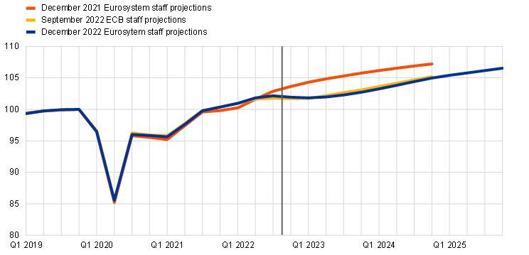
Notes: Data are seasonally and working day-adjusted. Historical data may differ from the latest Eurostat publications due to data releases after the cut-off date for the projections. The vertical line indicates the start of the current projection horizon.
Table 1
Macroeconomic projections for the euro area
(annual percentage changes, unless otherwise indicated)
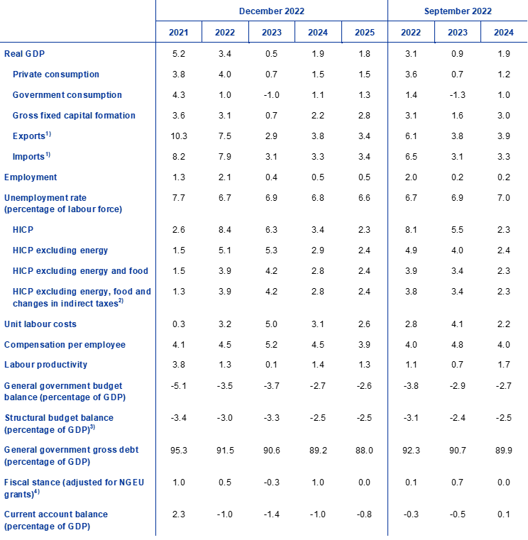
Notes: Real GDP and components, unit labour costs, compensation per employee and labour productivity refer to seasonally and working day-adjusted data. Historical data may differ from the latest Eurostat publications due to data releases after the cut-off date for the projections.
1) This includes intra-euro area trade.
2) The sub-index is based on estimates of actual impacts of indirect taxes. This may differ from Eurostat data, which assume a full and immediate pass-through of indirect tax impacts to the HICP.
3) Calculated as the government balance net of transitory effects of the economic cycle and measures classified under the European System of Central Banks definition as temporary.
4) The fiscal policy stance is measured as the change in the cyclically adjusted primary balance net of government support to the financial sector. The figures shown are also adjusted for expected grants under the Next Generation EU (NGEU) programme on the revenue side. A negative figure implies a loosening of the fiscal stance.
Turning to the components of GDP, household real consumption growth is expected to decline markedly in 2023, and to recover gradually in 2024-25. The removal of pandemic restrictions boosted services activity and supported private consumption over the summer months, but these effects are expected to fade during the last quarter of 2022. The energy shock owing to the war in Ukraine has pushed up consumer prices and uncertainty, severely hit consumer confidence and dampened real incomes, thus negatively affecting households’ real spending and possibly leading to a contraction in overall consumption in the short run. As a result, household consumption growth is expected to decline from 4.0% in 2022 to only 0.7% in 2023. Given moderating inflation and assuming receding uncertainty, coupled with relatively steady growth of disposable income, consumption will gradually recover and grow by 1.5% in 2024 and 2025.
Real disposable income is projected to contract in 2023, largely on the back of high inflation, and to gradually recover in 2024-25. Real disposable income is estimated to have declined in 2022 owing to higher inflation and lower overall net fiscal transfers than in 2021 – reflecting the withdrawal of pandemic-related support measures and despite the implementation of additional measures to compensate for high energy prices. It is expected to decline further in 2023, amid continued high inflation coupled with moderating growth in labour and non-labour income, despite strengthening wage growth. These factors more than offset the favourable impact from continuing fiscal support, including newly adopted measures to compensate for high energy prices. Against the background of a decline in inflation and a recovery in economic activity, real disposable income is expected to recover in 2024 and to strengthen further in 2025 to well above its pre-pandemic level.
The household saving ratio is expected to decline to below its pre-crisis level in 2023 and 2024, before recovering slightly in 2025. Increased uncertainty is expected to lead to a temporary rise in the household saving ratio in the short term, despite the need to buffer consumption in view of the deterioration in purchasing power. The saving ratio is then projected to decrease slightly in 2023-24, resulting in some reduction in the savings acquired during the pandemic, albeit a smaller reduction than envisaged in the previous projections. Across the income distribution, households in the lower income groups, who have accumulated relatively small stocks of savings and are more exposed to the recent energy and food price shocks, might need to cut savings to finance their essential consumption. Wealthier and older households might use their liquid savings accumulated during the pandemic to buffer their consumption, but this effect is expected to be largely limited by precautionary motives. As inflation converges back towards 2%, the saving ratio is seen to stabilise later in the projection horizon at close to its pre-pandemic level.
Box 1
Technical assumptions about interest rates, commodity prices and exchange rates
Compared with the September 2022 ECB staff projections, the technical assumptions include higher interest rates, lower oil prices, significantly lower wholesale gas and electricity prices and an appreciation of the euro. The technical assumptions about interest rates and commodity prices are based on market expectations with a cut-off date of 23 November 2022. Short-term interest rates refer to the three-month EURIBOR, with market expectations derived from futures rates. The methodology gives an average level for these short-term interest rates of 0.4% in 2022, 2.9% in 2023, 2.7% in 2024 and 2.5% in 2025. Market expectations for euro area ten-year nominal government bond yields imply an average annual level of 1.8% for 2022, gradually increasing over the projection horizon to 2.7% for 2025.[4] Compared with the September 2022 projections, market expectations for short-term interest rates have been revised up by around 20, 90 and 60 basis points for 2022, 2023 and 2024 respectively, on the back of expectations of a swifter withdrawal of monetary policy stimulus. This has also led to an upward revision to long-term sovereign bond yields of around 20 to 50 basis points over the projection horizon.
Table
Technical assumptions
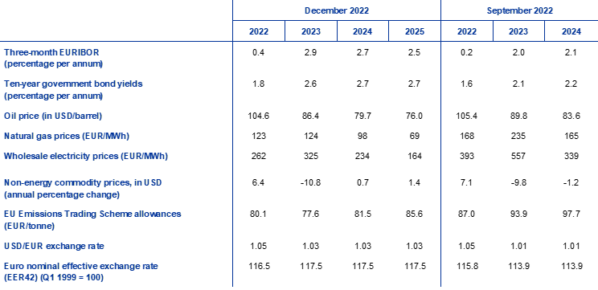
The technical assumptions for oil prices have been revised down owing to weaker demand, despite lower OPEC+ supply. The global economic slowdown and lockdowns in China have continued to weigh on oil prices through lower oil demand. Since the September 2022 projections, the International Energy Agency has revised down its forecast for global oil demand in 2023 by 0.4%. The renewed lockdowns in China are expected to weigh further on oil demand as the Chinese economy is likely to continue to be affected by the zero-COVID policy amid rising COVID-19 infection rates. These demand factors more than offset the recent cut in oil production targets implemented by OPEC+ since the onset of the pandemic. The oil futures curve has shifted downwards since the September 2022 projections (by 3.8% for 2023 and by 4.7% for 2024) and remains in backwardation. The price of a barrel of Brent crude oil is assumed to stand at USD 86 in 2023 and to decline to USD 76 in 2025.
Wholesale gas and electricity prices have fallen sharply, but remain high, while the assumed path for prices of carbon emissions allowances on the EU Emissions Trading System has declined. The efforts of EU Member States to secure alternatives to Russian gas supplies throughout 2022 and the recent very mild weather implied almost full European gas storage facilities in mid-November, leading to a large drop in European gas prices. The new assumptions entail a sharp downward revision to gas prices compared with the technical assumptions of the September 2022 projections (by 47% for 2023 and 41% for 2024). The decline was especially pronounced in the spot price, while futures prices still signal high supply risks, especially for next year, when the EU will need to replenish its gas reserves ahead of the 2023-24 winter. Accordingly, the Dutch TTF gas price futures curve stays elevated at €124 per MWh throughout 2023 and signals a drop in gas prices after the 2023-24 winter season and a further fall in 2025. Wholesale electricity price futures have also been revised down substantially, mirroring the change in gas price assumptions. The impact of alternative energy price assumptions to those included in the baseline projection is reflected in a sensitivity analysis in Box 4. As regards prices of carbon emissions allowances on the Emissions Trading System, the assumed path based on futures prices has been revised significantly downwards since the cut-off date for the September 2022 projections (-17% for 2023 and 2024) owing, among other factors, to weaker economic growth prospects as well as the EU finance ministers’ proposal to frontload the sale of emission certificates starting in the spring of 2023.
Bilateral exchange rates are assumed to remain unchanged over the projection horizon at the average levels prevailing in the ten working days ending on the cut-off date. This implies an average exchange rate of USD 1.05 per euro in 2022 and USD 1.03 per euro in 2023-25, which is around 2% higher than in the September 2022 projections. The assumption for the effective exchange rate of the euro implies an appreciation of around 3% compared with the September 2022 projections.
Housing investment is projected to contract significantly in 2023, as one of the demand components most exposed to tightening financing conditions, and to recover very slowly in the course of 2024-25. Rising mortgage rates and tighter access to credit, as well as persistently high uncertainty and the impact of inflation – which raises construction costs while reducing household purchasing power and demand – are expected to weigh on housing investment and lead to a decline in 2023. Housing investment growth is expected to return to positive territory in 2024. However, growth rates are likely to be moderate over the remainder of the projection horizon, as stricter financing conditions partly offset the impact of less negative Tobin’s Q[5] effects and higher disposable income.
Business investment is also expected to be significantly affected by rising financing costs, together with high uncertainty and elevated energy prices in the short term, but it is expected to recover in 2024-25. Business investment grew at a strong pace in the third quarter of 2022 owing to a marked turnaround in motor vehicle output, signs of easing supply bottlenecks, also, in part, owing to the filling of still elevated work backlogs, while there has been a sharp decline in new orders since the summer. It also reflected a strong increase in intellectual property investment in Ireland. Heightened uncertainty related to the war in Ukraine, elevated energy prices and rising interest rates have led to falling business confidence and lower expectations for business activity in the capital goods sector. These factors, together with wider concerns over potential energy supply constraints, are now expected to result in a short, sharp contraction in business investment in the short term. Thereafter, business investment is expected to gradually recover, as uncertainty recedes, supply bottlenecks ease and final demand strengthens. Ongoing deployments of funds under the Next Generation EU (NGEU) programme are expected to crowd in private investment, supported by growing efforts by firms to decarbonise production (including in the context of the EU’s REPowerEU initiative) amid the need to reduce dependency on Russian energy supplies.
Box 2
The international environment
The world economy has been buffeted by headwinds which are weakening the outlook for global growth and euro area foreign demand, while global inflation remains high but seems to have peaked. Russia’s war in Ukraine remains a major source of disruption, especially in energy and food commodity markets, and although energy prices have declined since the September 2022 projections, they remain volatile. In addition, especially across emerging market economies, the war is fuelling uncertainty about food security. In China, the decision by the authorities to continue, for the time being, to implement a zero-COVID strategy and the recession in the residential property sector are weighing further on economic activity. While pandemic-related restrictions and supply chain bottlenecks have eased globally, high and persistent inflationary pressures and tighter financial conditions continue to take a toll on households’ disposable income.
Global growth is projected to record weak momentum in 2023, but to gradually recover thereafter. Global real GDP growth (excluding the euro area) is projected to slow sharply to 2.6% in 2023, well below its long-term average (3.6%), and to edge up in 2024 and 2025 to 3.1% and 3.3% respectively. This weakness in the global economy stems mainly from major advanced economies and China. The US economy is projected to slow considerably owing to tighter than expected financial conditions, which negatively affect consumer spending and investment. The UK economy is likely to enter a recession as private consumption is hit by high consumer prices and rising borrowing costs. In China, real GDP growth in 2022 is expected to miss the target set by the government and to remain well below pre-pandemic average growth rates for the rest of the projection horizon. In Russia, the economy entered a recession in 2022, which has been less severe than initially expected owing to the redirection of Russian oil exports towards Asian countries. Compared with the September 2022 projections, global real GDP growth (excluding the euro area) has been revised upwards for 2022 and downwards for 2023 and 2024. The upward revision for 2022 reflects mainly a better than previously expected third quarter outturn in the United States, China and Russia. Lower economic growth over the projection horizon is driven in particular by China and, in 2024, by the United States.
The outlook for euro area foreign demand has also deteriorated on the back of weaker global economic activity. Global trade moderated in the second quarter of 2022 amid weakening manufacturing activity and lingering supply bottlenecks, which intensified with the Russian aggression against Ukraine. Trade is expected to have remained weak in the second half of the year amid persistent headwinds, notwithstanding some fading of global supply constraints. Compared with the September 2022 projections, the outlook for global trade (excluding the euro area) and euro area foreign demand has been revised upwards for 2022, reflecting stronger than previously expected trade dynamics across advanced economies, especially in the European countries outside the euro area. Euro area foreign demand has been revised downwards for the later years of the projection horizon, in line with expected weaker economic growth.
Table
The international environment
(annual percentage changes)
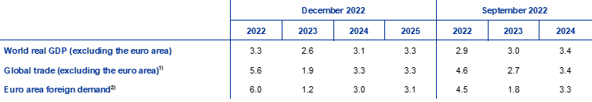
1) Calculated as a weighted average of imports.
2) Calculated as a weighted average of imports of euro area trading partners.
Global inflation rose again in October, driven by food price developments, but momentum has softened further. Annual headline inflation in OECD countries increased to 10.7% in October, from 10.5% in September, while core inflation stabilised at 7.6%. Food inflation increased to record levels but was compensated for by a continued fall in energy inflation. The momentum in inflation developments slowed further, extending the trend of somewhat softening price pressures recorded since June. The annual rate of change of export prices of euro area competitors is expected to be elevated in the near term and to decline thereafter, amid falling commodity prices and easing pipeline pressures.
The slowdown in the world economy is expected to weigh on euro area trade in 2023, which is projected to remain weak in net terms in 2024-25, leading to a persistent negative current account balance. Contracting euro area foreign demand in the second half of 2022 has weakened the prospects for euro area exports, despite the easing of supply bottlenecks and the past depreciation of the euro. Supplier delivery times have continued to fall, leading to better supplies of durable and technological goods, including semiconductors, but this is also due to lower demand. For 2023, more modest growth rates are expected for euro area imports and exports after two years of recovery from the pandemic. This is mainly related to expected lower demand for durable goods. The recovery in tourism is expected to slow down somewhat, as pent-up demand wanes and consumer confidence and disposable income are hit by the war in Ukraine and the energy shock in the short term. Net exports are expected to make a neutral contribution to GDP growth in 2023, and then a small positive contribution in 2024, before becoming neutral again in 2025. The euro area current account[6] is expected to stay negative over the projection horizon given the weak dynamics in net exports. The terms of trade are expected to improve in the course of 2023. In the medium term prospects for the export sector are expected to be subdued owing to competitiveness losses arising from high energy prices.
Chart 3
Euro area real GDP – decomposition into the main expenditure components
(annual percentage changes, percentage point contributions)
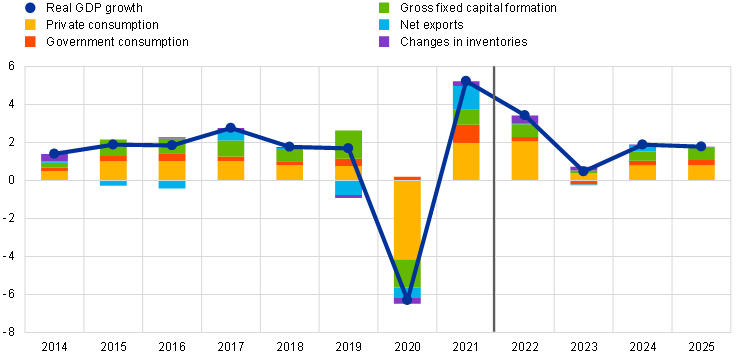
Notes: Data are seasonally and working day-adjusted. Historical data may differ from the latest Eurostat publications due to data releases after the cut-off date for the projections. The vertical line indicates the start of the projection horizon.
The labour market is projected to remain resilient in the short term and to broadly follow the path of economic activity later on (Chart 4). Following a strong increase in 2022, employment growth is projected to decline significantly in 2023, reflecting lower labour demand on account of the slowdown in the economy. In the short term firms are expected to adjust working time downwards while hoarding headcount labour amid still significant labour shortages. From 2024 employment is projected to broadly keep pace with the foreseen improvements in economic activity. Accordingly, growth in productivity per person employed is expected to drop sharply from 1.3% in 2022 to 0.1% in 2023. It should recover to 1.4% and 1.3% in 2024 and 2025 respectively. The unemployment rate is projected to increase to 6.9% in 2023, and thereafter to decline continuously to stand at a level of 6.6% in 2025.
Chart 4
Euro area labour market
(percentage of labour force, annual percentage changes)
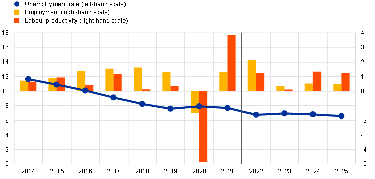
Note: The vertical line indicates the start of the projection horizon.
Compared with the September 2022 projections, real GDP growth has been revised up by 0.3 percentage points for 2022, down by 0.4 percentage points for 2023 and is unchanged for 2024. The upward revision for 2022 reflects the positive surprises in the second and third quarters on account of stronger than expected effects from the post-pandemic reopening of the economy. This was only partially offset by the downward revision in the last quarter of 2022, stemming from the energy crisis and the related elevated uncertainty, falling confidence and higher inflation. These factors also explain the downward revisions for the first three quarters of 2023. Although quarterly GDP growth is projected to start to recover from the second quarter of 2023, the pace is seen to be slower than had been expected in the September 2022 projections. This creates a negative carry-over effect, which fully offsets the stronger intra-year dynamics, resulting in no revision to annual GDP growth in 2024.
Box 3
A downside scenario related to energy supply cuts
Given the uncertainty surrounding the economic outlook for the euro area on account of energy supply concerns, this box presents a downside scenario. It entails a longer conflict in Ukraine and a complete cut-off of Russian gas, with a much lower level of substitution with alternative sources than assumed in the baseline projections. It also assumes higher commodity prices, elevated uncertainty, weaker trade and a deterioration in financing conditions compared with the baseline. Economic activity would hence suffer from stronger adverse shocks and would be considerably weaker than in the baseline projections in 2023 and 2024. Inflation would be higher in both years, especially in 2023 (Table A), but would decline to 2% in 2025.
Table A
December 2022 baseline projections and the downside scenario for the euro area
(annual percentage changes)
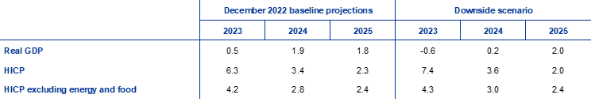
In contrast to the baseline projections, the scenario assumes gas supply shortages towards the end of this winter and throughout the following winter, leading to rationing and production cuts. The remaining flows of Russian gas would be halted and the possibility of substitution with supplies from other countries would be much more limited than assumed in the baseline. In addition, measures implemented by EU countries to constrain demand would not be successful and the coming two winters would be unusually cold, resulting in some limited shortages of gas towards the end of this winter and more severe shortages throughout the winter of 2023-24. This would trigger disruptions to value chains and a need to ration the energy used as an input in production. While some countries are less dependent on Russian gas supplies, other countries would incur severe production cuts as a consequence of a sizeable energy shortfall.
These supply disruptions would also lead to substantial increases in energy prices, while further disruptions to Ukrainian grain exports would also cause a spike in food commodity prices. The complete and permanent cut-off of the remaining Russian gas supply to the EU, as well as tightness in the global market for liquified natural gas (LNG) when European countries replenish their gas storage reserves ahead of the 2023-24 winter, would lead gas prices to peak in late 2023 and early 2024 at €275 per MWh, i.e. at the gas price cap proposed by the European Commission in November 2022, which is around 125% above the assumptions in the baseline (Table B). Gas prices would then gradually decline as global LNG export capacity and EU LNG import capacity gradually increase. The scenario also assumes that Russia has only a limited ability to redirect oil exports, owing to the EU insurance ban for Russian oil shipments and the G7 oil price cap, causing oil prices to spike at 47% above the baseline in the first quarter of 2023, but to return to the baseline level by mid-2025 as the oil market gradually rebalances. The scenario also assumes a closure of the Black Sea shipping corridor and further disruptions to Ukrainian exports of wheat and corn, as well as spillovers from rising energy costs and fertiliser prices, pushing up international food commodity prices relative to the baseline assumptions.
Table B
Assumptions for the downside scenario
(annual percentage deviations from baseline levels, unless otherwise indicated)
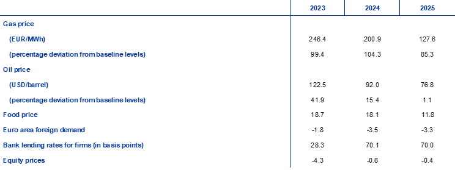
Global economic activity and trade would be negatively affected in the downside scenario, which would weigh heavily on euro area foreign demand. The longer and more intense war in Ukraine continuing into 2023 and the increasing effects of international sanctions against Russia, coupled with higher commodity prices, heightened uncertainty and tighter financial conditions, would constitute a downward drag on the world economy, in particular for the central and eastern European region. Furthermore, with significant disruptions to trade and global value chains, euro area foreign demand would be almost 2% lower in 2023 and around 3½% lower in 2024-25 compared with the baseline.
A rise in domestic uncertainty would imply a significant repricing of market instruments and a deterioration in bank lending conditions. The continuing intense conflict in Ukraine would lead to a renewed increase in uncertainty in the first quarter of 2023, and again in the third quarter of 2023 owing to concerns about gas shortages over the next winter. This implies a further increase in volatility in the financial markets. Compared with the baseline, equity prices are seen to drop by around 4% in 2023. Banks would reprice loans in line with their increased funding costs and the greater borrower risk implied in the scenario.
The downside scenario would imply a contraction in euro area economic activity in 2023 and markedly weaker growth than in the baseline in 2024, followed by a strong, but incomplete, rebound in 2025. The effects of production disruptions are based on an assessment of the scope for energy substitution in the economy,[7] while the further macroeconomic effects of the overall scenario have been evaluated using the ECB-BASE model.[8] Compared with the baseline, euro area real GDP growth in the downside scenario would be 1.1 percentage points lower in 2023 and 1.7 percentage points lower in 2024, before stabilising in 2025 at 0.2 percentage points above the baseline growth rate (Chart). One of the key drivers of the adverse GDP profile is the gas supply shortages and the production disruptions they would trigger. As the impact of supply disruptions eases on account of a gradual substitution of energy inputs and economic adjustment, the recession would be followed by GDP growth somewhat above the level of growth in the baseline, while the level of GDP in the downside scenario remains below the baseline at the end of the horizon.[9]
Large commodity price increases imply strong upward price pressures, prolonging the expected period of elevated inflation. HICP inflation is estimated to steeply increase, reaching 7.4% in 2023 and 3.6% in 2024. This mainly reflects the shocks to commodity and food prices, as well as the supply shock owing to production disruptions. At the same time, the drag from lower demand slightly compensates for the price pressures in 2024, and more notably in 2025 when the reversal of energy price rises contributes to lower inflation, which is seen to fall to 2%.
Chart
Impact on real GDP growth and HICP inflation in the euro area in the downside scenario compared with the December 2022 baseline projections
(deviations from the December 2022 baseline projections, in percentage points)
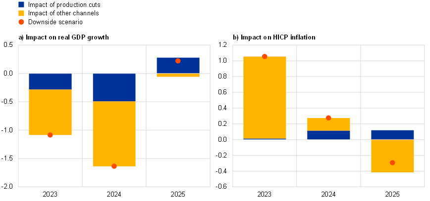
This analysis is surrounded by a considerable degree of uncertainty. Commodity prices, and especially gas prices, are highly volatile in Europe at the current juncture. The effects of production disruptions generated by gas supply cuts crucially depend on the extent to which Russian gas continues to be substituted with alternative sources, the extent to which gas can be substituted by other inputs in production processes and how the economy adjusts to the price environment. The analysis does not consider the response from monetary policy which could mitigate the macroeconomic propagation of the shocks. Finally, given the large number of government interventions that vary substantially across euro area countries, the analysis does not take into account national government interventions that could stabilise production, shield lower income households or mitigate the pass-through of higher commodity prices to consumer prices, beyond what is already included in the baseline projections.
2 Fiscal outlook
Sizeable further fiscal stimulus measures have been incorporated into the baseline compared with the September 2022 projections. This mainly reflects the further fiscal support decided by governments in response to soaring energy prices and the high cost of living, amounting to about 0.7 percentage points of GDP in 2022 and, most notably, 1.6 percentage points of GDP in 2023. The latter reflects new stimulus measures approved by governments in their 2023 draft budgetary plans. With these revisions, the total fiscal stimulus related to the energy crisis and the war in Ukraine incorporated into the projections rises to around 2% of GDP over 2022-23. Based broadly on currently approved government measures, about one-third of this fiscal stimulus – particularly the spending on compensation for higher energy prices and inflation and, to some extent, also increased defence capabilities – is projected to continue having a budget impact in 2024. Overall, after the strong expansion in 2020 and some tightening in 2021 and expected tightening in 2022, the euro area fiscal stance adjusted for NGEU grants is now projected to loosen somewhat in 2023, mainly on account of the new stimulus measures. As a large part of the measures is currently assumed to be reversed, the fiscal stance is projected to tighten in 2024, and to remain broadly neutral in 2025. Significant uncertainty remains with respect to the possibility of an extension of the currently approved energy support measures.[10]
The euro area budget balance is projected to worsen in 2023 before improving thereafter, while government debt is projected to decline over the full projection horizon. Over the entire projection horizon the improvement in the budget balance-to-GDP ratio is driven by the cyclical component, followed closely by the lower cyclically adjusted primary deficit, while interest payments increase. After an estimated improvement for 2022 (from -5.1% of GDP in 2021 to -3.5% in 2022), the budget balance is projected to decline to -3.7% in 2023. Further improvements are estimated in 2024 and, to a lesser extent, in 2025, so that at the end of the horizon the budget balance is projected to be -2.6% of GDP; nonetheless, this is still well below the pre-pandemic level (-0.6%). After the sharp increase in 2020, euro area aggregate government debt is expected to decline over the projection horizon, reaching 88% of GDP in 2025, which is still above its pre-pandemic level (84%). This decline is mainly due to favourable interest rate-growth differentials on account of the nominal GDP growth, which more than offsets the persisting, albeit decreasing, primary deficits. Compared with the September 2022 projections, the budget balance path has been revised upwards for 2022 and significantly downwards for 2023, while remaining unchanged for 2024. These revisions broadly reflect changes in the cyclically adjusted primary balance, on account of the factors outlined above. The debt-to-GDP ratio has been revised downwards over the projection horizon, mainly on account of base effects from 2021 and somewhat more favourable projections for the interest rate-growth differential.
3 Prices and costs
HICP inflation is projected to average 8.4% in 2022, before decreasing to 6.3% in 2023, 3.4% in 2024 and 2.3% in 2025. This profile for headline inflation reflects declines in the annual rates of change of all main components to varying degrees (Chart 6). In particular, energy inflation will fall sharply in the course of 2023, contributing significantly to the decline in the headline inflation rate from 10% at the end of 2022 to 3.6% in the last quarter of 2023. It will nevertheless remain an important factor in headline inflation being significantly above the ECB’s inflation target in 2024.
The short-term outlook for inflation remains surrounded by high uncertainty, nevertheless HICP inflation is expected to remain extremely elevated in the next few months before falling steadily throughout 2023, driven by energy base effects and easing pipeline pressures and aided by government measures (Chart 5). The surge in headline inflation in 2022 reflects large increases in energy and food prices, a strong rise in non-energy industrial goods prices as the impact on prices from supply chain disruptions persists, and continuing upward effects on services prices from the reopening of the contact-intensive part of the services sector. These broad-based price increases mirror an extraordinary rise in the costs of energy and other inputs, reflected in producer prices, coupled with still rather robust demand until the middle of 2022. HICP inflation is expected to decline in 2023, largely owing to a steep fall in the energy component. This in turn reflects downward base effects, predominantly affecting prices of fuels. Declines in the assumed path of oil prices, based on market expectations, also contribute slightly to the decline, while electricity and gas price assumptions imply initially further strong increases before contributing to the declines as well.[11] Food inflation is set to rise further in the coming months from already high rates. This is due to continued strong pipeline pressures from the past increases in food commodity prices and from energy prices and other input costs, intensified by the lagged effects of the depreciation of the euro, as well as by increases in wages, including minimum wages. Food inflation is expected to start moderating later in 2023 as these cost pressures subside. HICP inflation excluding energy and food is projected to peak around the turn of the year and to moderate only rather gradually, with wage growth rising and pipeline pressures fading only slowly. Price pressures are expected to be more persistent in services inflation than in non-energy industrial goods inflation.
Chart 5
Euro area HICP inflation
(annual percentage changes)
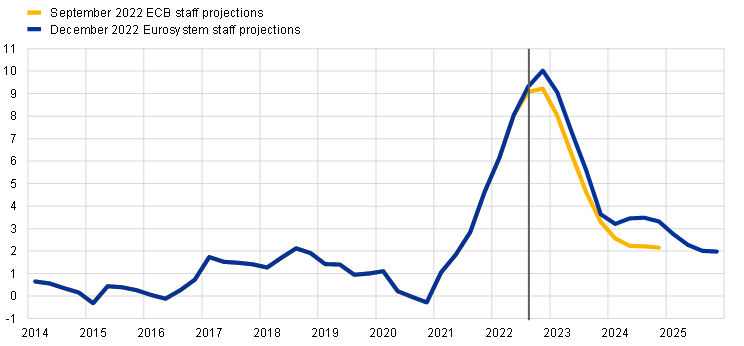
Note: The vertical line indicates the start of the current projection horizon.
Gas and electricity prices are expected to have a protracted impact on headline inflation owing to the lagged pass-through of wholesale prices in some euro area countries, coupled with fiscal support measures which lower inflation in the short term while adding to its persistence later in the horizon. While the transport fuels component is already expected to make a negative contribution to inflation from the middle of 2023, consumer prices for electricity and gas are expected to continue to make a positive contribution into 2025, notwithstanding the recent sharp declines in wholesale prices. In some countries the pass-through of wholesale prices to retail prices is relatively fast, taking only a few months, while in others it can be much more protracted, taking 24 months or more. These differences relate to the functioning of national retail markets and price-setting, such as the share of regulated and non-regulated tariffs, fixed or flexible contracts and average price fixation periods. For some countries, the normal pattern of lagged pass-through also suggests that past wholesale price developments are yet to fully pass through. At the same time, changes in retail markets and price-setting suggest that the pass-through has become somewhat faster than in the past in some countries. Fiscal measures to compensate for high energy prices and inflation also play an important role for the inflation outlook over the projection horizon. They are estimated to have dampened headline HICP inflation by 1.1 percentage points in 2022 and should again dampen inflation by 0.5 percentage points in 2023. Thereafter, however, the withdrawal of these measures is expected to put significant upward pressure on inflation, amounting to 0.7 percentage points in 2024 and 0.4 percentage points in 2025.[12]
Fiscal measures in support of the green transition have a small upward impact on the inflation outlook.[13] They are estimated to contribute around 0.1 percentage points to HICP inflation in each year of the projection horizon. In the past, increases in prices of carbon emissions allowances on the EU Emissions Trading System have contributed to the increases in wholesale electricity prices.[14] However, based on futures prices (see Box 1), their contribution to headline HICP inflation over the projection horizon is expected to be marginal.
HICP food inflation is expected to decline in the later years of the projection horizon in line with commodity price assumptions. The unwinding of energy inflation also plays an important role in the unwinding of food price inflation, given the upward price pressures from the surge in energy input costs still prevailing in the short term. Farm gate prices are assumed to decline slowly over the projection horizon and to remain at a historically high level, also above the level assumed in the September projections. As a result, food inflation is seen to stand somewhat above its historical average in 2025, at 2.3%.
HICP inflation excluding energy and food is projected to moderate as supply bottlenecks and pipeline pressures fade, while remaining elevated by historical standards on account of strong wage growth. The expected decline from 4.2% in 2023 to 2.4% in 2025 follows the unwinding of upward impacts from supply bottlenecks and the effects of the reopening of the economy, coupled with lagged effects from the slowdown in growth and some easing of indirect effects from higher energy prices. At the same time, the fact that HICP inflation excluding energy and food stands at 2.4% on average in 2025 reflects lagged impacts from the depreciation of the euro, as well as tight labour markets and inflation compensation effects on wages.
Chart 6
Euro area HICP inflation – decomposition into the main components
(annual percentage changes, percentage points)
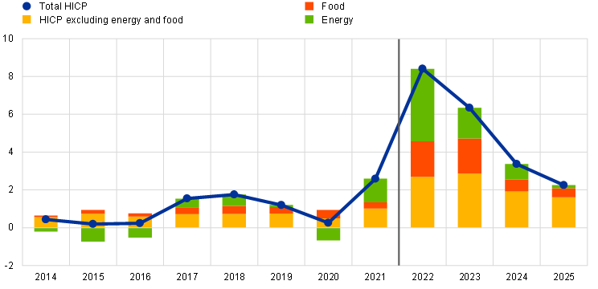
Note: The vertical line indicates the start of the current projection horizon.
Wage growth is expected to be strong throughout the projection horizon. Wage growth, as measured by compensation per employee, is projected to increase from 4.5% in 2022 to 5.2% in 2023 before declining to 4.5% in 2024 and 3.9% in 2025 as inflation declines. Wages are projected to grow at rates well above the historical average, reflecting resilient labour markets, increases in minimum wages and inflation compensation. Compared with the September projections, wage growth has been revised up by a cumulated 1.4 percentage points over 2022-24 mainly on account of higher compensation for inflation. However, a real wage loss is still expected in 2022 and 2023, which is projected to be partially recovered over the remainder of the projection horizon. Growth in unit labour costs is expected to pick up further in 2023 owing to the envisaged further increases in wage growth, as well as weakening labour productivity growth in the wake of the economic downturn amid labour hoarding. Thereafter unit labour cost growth is seen to start to recede as wage growth moderates and, in particular, as labour productivity growth resumes in line with the expected strengthening of economic activity.
The annual growth rate of import prices has surged in 2022 but is expected to moderate sharply in 2023 and to broadly stagnate in the last two years of the projection horizon. In the course of 2023 the annual growth rate is envisaged to drop sharply in line with the assumed declines in oil and other commodity prices and with receding supply bottlenecks for imported inputs.
Compared with the September 2022 ECB staff macroeconomic projections, the outlook for HICP inflation has been revised upwards by 0.3 percentage points for 2022, by 0.8 percentage points for 2023 and by 1.1 percentage points for 2024. The upward revisions are mainly related to recent upward data surprises, together with a reassessment of the strength and persistence of pipeline price pressures (including input cost increases for the food sector) and their pass-through, as well as upward revisions to the outlook for wage growth. New fiscal measures decided since the September 2022 projections, especially those designed to reduce energy price increases, have a downward impact of 0.7 percentage points in 2023, thereby partly offsetting some of the aforementioned upward impacts. In 2024, however, the withdrawal of these measures contributes 0.5 percentage points to the upward revision to headline inflation. Downward revisions to the energy commodity price assumptions, a weaker growth outlook, a faster easing in supply bottlenecks and the recent appreciation of the euro only partly offset the upward revisions to headline inflation.
Box 4
Sensitivity analysis: alternative energy price paths
Given the significant uncertainty surrounding future energy price developments, various sensitivity analyses assess the mechanical implications for the baseline projections of alternative paths. This box first considers the risks to the short-term inflation outlook from possible exceptionally strong movements in energy commodity prices given the current high volatility in energy commodity prices. Thereafter the impact of selected alternative paths for energy prices on real GDP growth and HICP inflation throughout the entire projection horizon are assessed.
The current high volatility in oil prices, and particularly in gas prices, has greatly increased the uncertainty surrounding the inflation outlook in the very short term. Such strong short-term volatility is usually not captured by the option-implied distribution around futures (see below). To assess such short-term sensitivity, one possibility is to consider an upper and lower range for short-term variations in oil and gas prices and then derive forecasts for near-term inflation based on this range. In this sensitivity analysis the range set for oil is from USD 60 to USD 120 per barrel and for wholesale gas prices from €50 to €200 per MWh. These prices, which are assumed to hold from December 2022 to March 2023, are fed into the set of energy equations (for fuels, electricity and gas) used by ECB staff for forecasting short-term inflation. The assumed maximum increases in oil and gas prices would lift headline HICP inflation by 0.2 percentage points in the last quarter of 2022 and by 1.0 percentage point in the first quarter of 2023, compared with the baseline projection. The assumed maximum decreases in oil and gas prices would have a symmetric effect, reducing headline inflation by 0.2 percentage points in the last quarter of 2022 and by 1.0 percentage point in the first quarter of 2023.
Chart
Alternative paths of HICP inflation in the short term
(annual percentage changes)
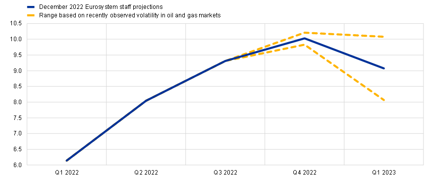
Looking at the entire projection horizon, alternative paths for energy prices are derived from option-implied oil prices, recent forecast errors of gas price futures and a constant price path. Alternative downside and upside paths are derived from the 25th and 75th percentiles of the option-implied neutral densities for the oil price on 23 November 2022 (the cut-off date for the technical assumptions). This distribution shows some downside skewness. In the absence of similar distributions for gas prices, alternative paths are derived from the 25th and 75th percentiles of a distribution based on recent forecast errors of gas price futures. In addition, a constant price assumption is considered for both oil and gas prices.
The impacts of these alternative paths are assessed using a range of Eurosystem and ECB staff macroeconomic models used in the projections. The average impacts on real GDP growth and inflation across these models are shown in the table below. The results show that the highest upward deviations from the baseline HICP inflation projections are for the 75th percentiles for 2023-25, which suggests that HICP inflation could be higher by 0.5-0.6 percentage points. The scenario based on the constant path suggests smaller impacts in 2023-24 but a similar upward deviation for HICP inflation in 2025. By contrast, in the scenario based on the 25th percentile, HICP inflation would be lower by 0.8-0.9 percentage points in 2023-24 and by 0.6 percentage points in 2025. Impacts on real GDP growth are -0.1 percentage points in both 2024 and 2025 for the 75th percentile and the constant price assumption, while the 25th percentile path would imply that GDP growth is 0.2 percentage points higher in 2024 and 0.1 percentage points higher in 2025.
Table
Impacts of alternative energy price paths
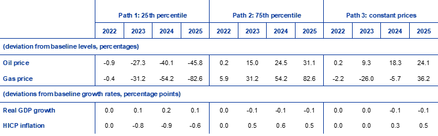
Notes: The 25th and 75th percentiles refer to the option-implied neutral densities for the oil price as at 23 November 2022 and for gas prices they refer to a distribution based on recent forecast errors of gas price futures. The constant oil and gas prices take the respective value as at the same date. The macroeconomic impacts are reported as averages of a number of ECB and Eurosystem staff macroeconomic models.
Box 5
Forecasts by other institutions
Forecasts for the euro area are available from both international organisations and private sector institutions. However, these forecasts are not directly comparable with one another or with the Eurosystem staff macroeconomic projections, as these were finalised at different points in time. Additionally, these projections use different methods to derive assumptions for fiscal, financial and external variables, including oil and other commodity prices. Finally, there are differences in working day adjustment methods across different forecasts.
Table
Comparison of recent forecasts for euro area real GDP growth and HICP inflation
(annual percentage changes)
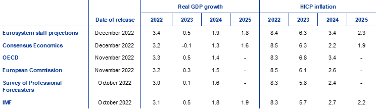
Sources: Consensus Economics Forecasts, 8 December 2022 (data for 2024 and 2025 are taken from the October 2022 survey); OECD November 2022 Economic Outlook 112, 22 November 2022; European Commission Autumn 2022 Economic Forecast, 11 November 2022; ECB Survey of Professional Forecasters, for the fourth quarter of 2022, 28 October 2022; IMF World Economic Outlook, 11 October 2022.
Notes: The Eurosystem staff macroeconomic projections report working day-adjusted annual growth rates, whereas the European Commission and the IMF report annual growth rates that are not adjusted for the number of working days per annum. Other forecasts do not specify whether they report working day-adjusted or non-working day-adjusted data. Historical data may differ from the latest Eurostat publications due to data releases after the cut-off date for the projections.
The December 2022 Eurosystem staff projections are at the upper end or above other forecasts for both GDP growth and inflation over the entire horizon. The Eurosystem staff projections for growth are slightly above the range of other forecasts for 2022 (possibly owing to the inclusion of the latest upward data revisions for the first three quarters of the year). For 2023 and 2025 they are within the range, while for 2024 the Eurosystem staff projections are the highest. As regards inflation, the Eurosystem staff projections are within the range of other forecasts for 2022 and 2023 and at the upper end or above the range for 2024 and 2025.
© European Central Bank, 2022
Postal address 60640 Frankfurt am Main, Germany
Telephone +49 69 1344 0
Website www.ecb.europa.eu
All rights reserved. Reproduction for educational and non-commercial purposes is permitted provided that the source is acknowledged.
For specific terminology please refer to the ECB glossary (available in English only).
PDF ISSN 2529-4687, QB-CF-22-002-EN-N
HTML ISSN 2529-4687, QB-CF-22-002-EN-Q
The cut-off date for technical assumptions, such as those for oil prices and exchange rates, was 23 November 2022. The projections for the global economy were finalised on 24 November and the macroeconomic projections for the euro area were finalised on 30 November 2022. The December 2022 Eurosystem staff projections for the euro area include Croatia in view of its accession to the euro area on 1 January 2023. Historical data for the euro area also include Croatia for all variables except the HICP. The current projection exercise covers the period 2022-25. Projections over such a long horizon are subject to very high uncertainty, and this should be borne in mind when interpreting them. See the article entitled “An assessment of Eurosystem staff macroeconomic projections” in the May 2013 issue of the ECB’s Monthly Bulletin. See http://www.ecb.europa.eu/pub/projections/html/index.en.html for an accessible version of the data underlying selected tables and charts. A full database of past ECB and Eurosystem staff macroeconomic projections is available at https://sdw.ecb.europa.eu/browseSelection.do?node=5275746.
The liquid component of savings is calculated as the amount of accumulated bank deposits of households that exceeds the level observed in the fourth quarter of 2019, scaled with disposable income. For the concentration of savings, see M. Dossche, D. Georgarakos, A. Kolndrekaj and F. Tavares, “Household saving during the COVID-19 pandemic and implications for the recovery of consumption”, Economic Bulletin, Issue 5, ECB, 2022.
This assessment follows a commitment to assess the impact of climate-related fiscal measures included in the staff macroeconomic projections as part of the ECB’s climate change roadmap (see https://www.ecb.europa.eu/press/pr/date/2021/html/ecb.pr210708_1_annex~f84ab35968.en.pdf).
The assumption for euro area ten-year nominal government bond yields is based on the weighted average of countries’ ten-year benchmark bond yields, weighted by annual GDP figures and extended by the forward path derived from the ECB’s euro area all-bonds ten-year par yield, with the initial discrepancy between the two series kept constant over the projection horizon. The spreads between country-specific government bond yields and the corresponding euro area average are assumed to be constant over the projection horizon.
Tobin’s Q is the value of an existing house divided by its construction cost.
In accordance with the balance of payments definition.
The elasticity of substitution for the production cuts in the downside scenario is obtained by using the constant elasticity of substitution (CES) production function approach in Bachmann, R., Baqaee, D., Bayer, C., Kuhn, M., Löschel, A., Moll, B., Peichl, A., Pittel, K. and Schularick, M., “What If? The Economic Effects for Germany of a Stop of Energy Imports from Russia”, ECONtribute Policy Brief, No 28, March 2022, as extended in Borin, A., Conteduca, F.P., Di Stefano, E., Gunnella, V., Mancini, M. and Panon, L., “Quantitative assessment of the economic impact of the trade disruptions following the Russian invasion of Ukraine”, Occasional Papers, No 700, Banca d’Italia, June 2022. Such elasticity relates to the possibility to substitute imported energy with domestic energy resources or, more generally, the degree to which agents are willing to reallocate their expenditure from imported energy to other products.
Angelini, E., Bokan, N., Christoffel, K., Ciccarelli, M. and Zimic, S., “Introducing ECB-BASE: The blueprint of the new ECB semi-structural model for the euro area”, Working Paper Series, No 2315, ECB, September 2019.
Compared with the downside scenario published in the context of the September 2022 ECB staff macroeconomic projections, a key difference in the current downside scenario is that there are assumed to be gas supply shortages for the next two winters, whereas in the September 2022 downside scenario the main shock was assumed to hit the economy in the winter of 2022-23. This leads to more pronounced effects both on GDP and on HICP inflation, which, in the current scenario, now drops below the baseline towards the end of the projection horizon owing to considerable slack in the economy and a reversal of some assumptions over the 2024-25 period.
The fiscal projections incorporate only those discretionary measures that, at the time of the cut-off date, have already been approved by parliaments or that have been endorsed by governments and that are specified in detail and likely to pass the legislative process.
To account for high uncertainty linked to the recent extreme volatility, particularly in gas and electricity wholesale prices, Box 4 provides a sensitivity analysis for HICP inflation based on various underlying assumptions for energy commodity prices.
Note that taking into account other discretionary fiscal policy measures not related to energy and inflation compensation, the impacts on inflation are -0.1 percentage points in 2023, 0.7 percentage points in 2024 and 0.5 percentage points in 2025.
See footnote 3.
See the box entitled “EU emissions allowance prices in the context of the ECB’s climate change action plan”, Economic Bulletin, Issue 6, ECB, 2021 and the article entitled “Energy price developments in and out of the COVID-19 pandemic – from commodity prices to consumer prices”, Economic Bulletin, Issue 4, ECB, 2022.
-
15 December 2022
-
29 December 2022